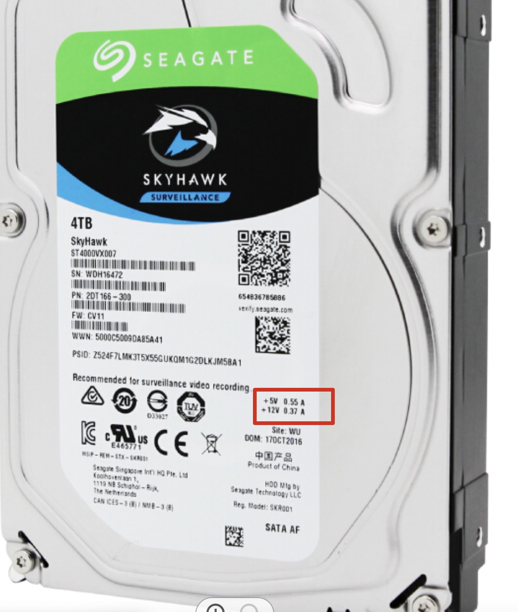

购买硬盘盒遇到的坑
最近买了一块 4T 的机械硬盘
想再选购一个硬盘盒
但是，在网上冲浪的时候发现好多人吐槽「硬盘盒毁盘」「USB容易掉盘」「要想硬盘死得快，硬盘座整起来」
我就纳闷了，凭什么一个盒子就能毁盘？
后来做了多方面调查，得出结论：
硬盘盒、USB等毁硬盘的情况主要是供电不足导致的！
（举个例子，比如这款硬盘盒，就「可能」会毁掉你的硬盘。它自带12V 1A 电源）

我们的硬盘上面写工作电压电流是 5V 0.55A, 12V 0.37A（以 SEAGATE ST4000VX007举例）
12V，0.37A，够了呀，内置电源是 12V 1A 的，电流都多出来3倍了。
实际上并不够。
在查阅了 官方手册 之后发现，这块硬盘的「Average Operating Power」是「5.5W」，但是，还有一项非常重要的参数是
「Startup Current, Typical (12V, 1.8A) 」
这个指的是硬盘刚开始工作时的瞬间电流，ST4000VX007 这块硬盘的瞬间电流可以达到 1.8A
这就是为什么这个硬盘盒的电源根本不能用的原因了：
主控芯片自带的「自动休眠功能」会让硬盘自动休眠，停止电机的转动。在每次停转、起转的时候，都会让电源负载电流超过最大值，电源无法供给，长此以往导致「掉盘」、「毁盘」
解决方案是买个好点的电源。